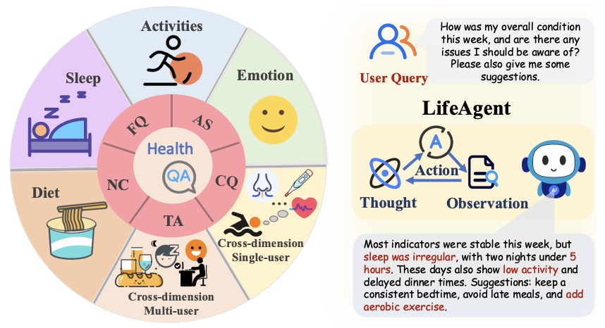
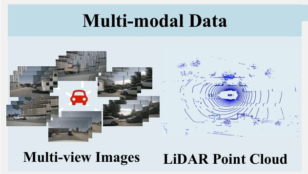
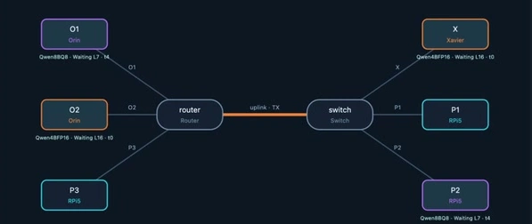
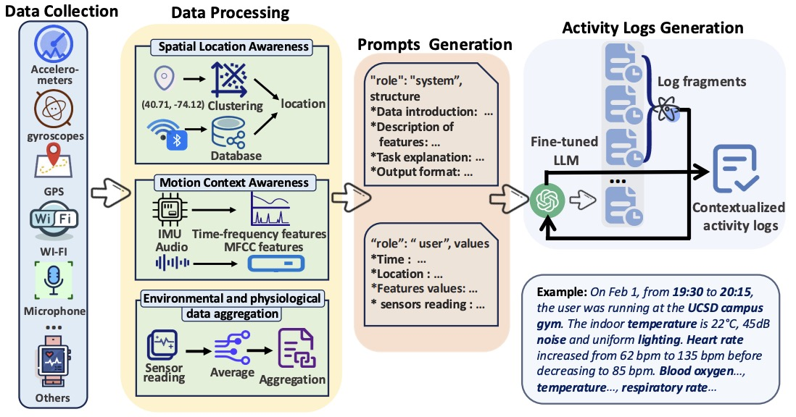
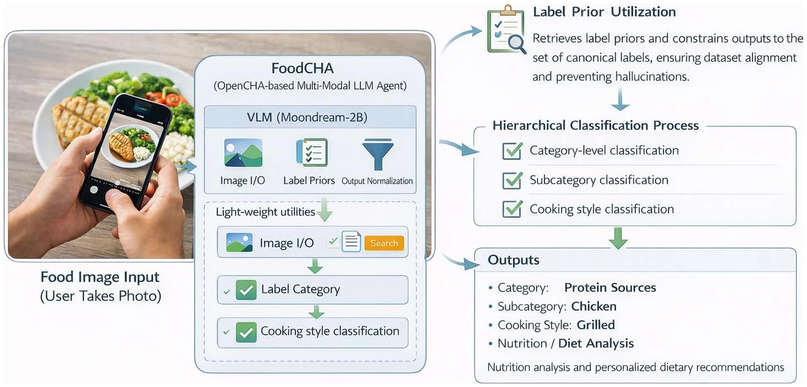
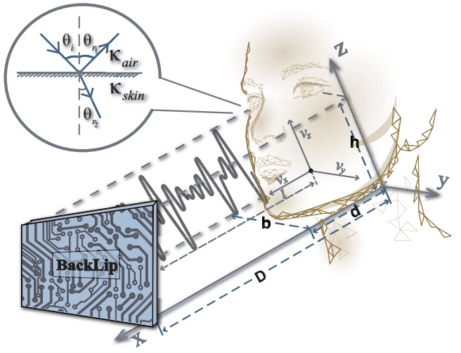
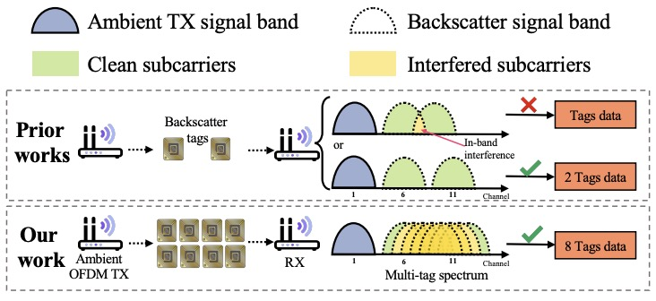

Multimodal Understanding & LLM Agents
I study how language agents use tools and multimodal records to answer questions that span days, activities, and people.
I am a Ph.D. candidate in Computer Science at the University of California San Diego, advised by ACM/IEEE Fellow Prof. Tajana Šimunić Rosing. I study multimodal AI, LLM agents, and efficient ML systems. My research is supported by the JUMP 2.0 centers CoCoSys and PRISM, and by the NSF AI Institute TILOS. Before UC San Diego, I earned my M.S. at the University of Science and Technology of China, advised by ACM/IEEE Fellow Prof. Xiang-Yang Li.
I have also been fortunate to collaborate with IEEE Fellow Prof. Vijay Kumar, IEEE Fellow Prof. Hirokazu Kato, IEEE Fellow Prof. Witold Pedrycz, IEEE Fellow Prof. Yusheng Ji, Prof. Chenren Xu, Prof. Hao Zhou, Prof. Yong Deng, Prof. Bingyi Kang, Prof. Haohua Du, and Prof. Jiahui Hou.
I welcome research conversations and collaborations. You can reach me at yet002@ucsd.edu or find more details in my CV.
My research aims to build intelligent systems that can perceive, reason, and adapt efficiently in real-world environments.

I study how language agents use tools and multimodal records to answer questions that span days, activities, and people.

I build models that fuse sensor observations, adapt as driving conditions change, and answer spatial questions about a scene.

I design ways to update models on-device and evaluate how language models can run across heterogeneous edge devices.
An asterisk (*) denotes equal contribution. Full list on Google Scholar
EMNLP 2026
We built a 22,573-question benchmark and evaluated 13 LLMs on reasoning across longitudinal lifestyle records. Our LifeAgent baseline breaks down complex questions, retrieves the relevant evidence, and uses tools to compute verifiable answers.

IEEE MASS 2025
A 1.5B-parameter model turns phone and smartwatch sensor readings into activity logs. It generates logs nearly 10× as fast as the 70B baseline and can summarize two hours of observations in about four minutes on a Raspberry Pi 5.

ACM SenSys 2025 · Poster
ContextLLM aligns mobile and wearable sensor signals and translates them into prompts for a language model that writes fine-grained activity logs.

IEEE ISNCC 2026
FoodCHA uses a compact vision-language model to identify a dish in stages, grounding fine-grained food and cooking-style predictions in the broader food category.

arXiv preprint · 2026
KLDrive reconciles camera and LiDAR observations across frames to build a scene graph. A language agent queries the graph to answer spatial questions, reaching 65.04% overall accuracy on NuScenes-QA and a SPICE score of 42.45 on GVQA.

arXiv preprint · 2025
DroneFL trains a shared trajectory predictor across drones with different viewpoints, using position-invariant motion features and altitude-aware normalization.

ACM/IEEE DAC 2026
HyperLiDAR updates a lightweight LiDAR segmentation model on-device by prioritizing points that are difficult to classify. Selecting informative points from each scan yielded up to a 13.8× retraining speedup over the evaluated baselines.

arXiv preprint · 2026
LEDGE predicts serving latency across heterogeneous edge devices by modeling how computation and network transfers interact. On Qwen deployments it achieved under 3.6% request-level latency error (MAPE), and simulation was 135.3× faster in aggregate than running inference on hardware.

ACM Transactions on Internet of Things · 2025
FHDnn trains class prototypes from pretrained features and compresses updates to one bit per component to reduce communication between federated clients.

arXiv preprint · 2026
SupHDC shares one projection across multiple queries and uses a separate classifier for each slot. On a Raspberry Pi 5 it ran about twice as fast as batched HDC, with a 2.26 percentage-point drop in mean accuracy.

arXiv preprint · 2026
RGLD combines a global density estimate with local neighbor evidence across random feature subsets to score anomalies in tabular data.

IEEE/ACM IWQoS 2023
BackLip uses backscatter measurements of lip movements to authenticate a speaker across different passphrases.

IEEE INFOCOM 2022
A multimodal smartwatch interface recognizes hand gestures and identifies the person performing them.

ACM MobiSys 2024
MultiRider manages in-band interference so multiple backscatter tags can transmit concurrently over an OFDM signal.

IEEE Transactions on Mobile Computing · 2025
WordWhisper uses device-specific responses in a speaker-to-gyroscope channel to communicate with an intended receiver.
I enjoy reading about ancient civilizations and watching historical documentaries. I am fascinated by classical art across both Chinese and Western traditions, especially Romanesque, Gothic, Renaissance, Baroque, and Rococo works. I also love music, hiking, and photography, as well as wandering through new cities in search of hidden corners, savoring good food, and taking in new scenery. At home, I also enjoy cooking.